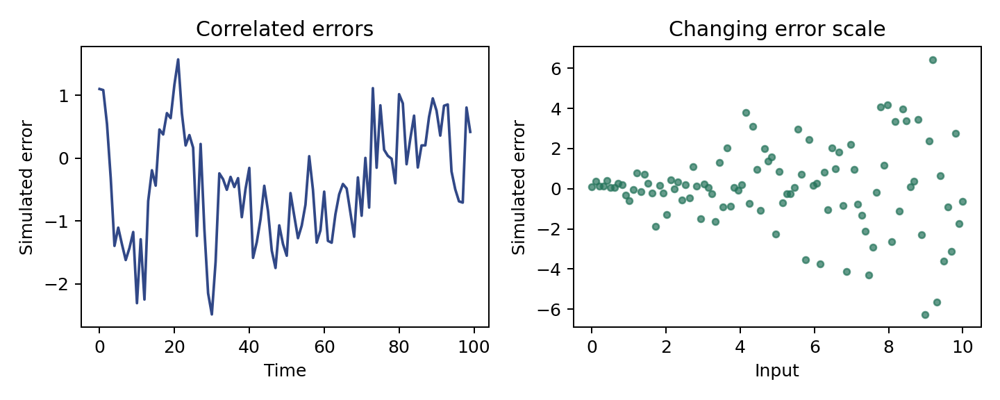

代码 3.3.3-02 · 模拟相关误差与异方差的图形线索
使用虚构教学数据。请在完整 Notebook 中按章节顺序运行；本块可能依赖前面定义的变量、导入或拟合结果。数学推导和带编号的引用见完整学习笔记。
逐步读代码
zeros(100)创建待填的数组，先给第一个值，再在range(1, 100)中依次计算索引 1 到 99。每个新误差包含前一个的 0.8 倍，故产生时间联系。- 第二种噪声将独立标准正态数乘以随输入增大的尺度；均值仍为零，但条件方差变化。
- 这两幅图画的是我们构造的真实噪声，不是对某个模型拟合后的残差；不能把模拟机制当作从真实图形完成了统计检验。
alpha=0.7仅控制散点透明度。
实际运行输出
simulated observations: 100 100
